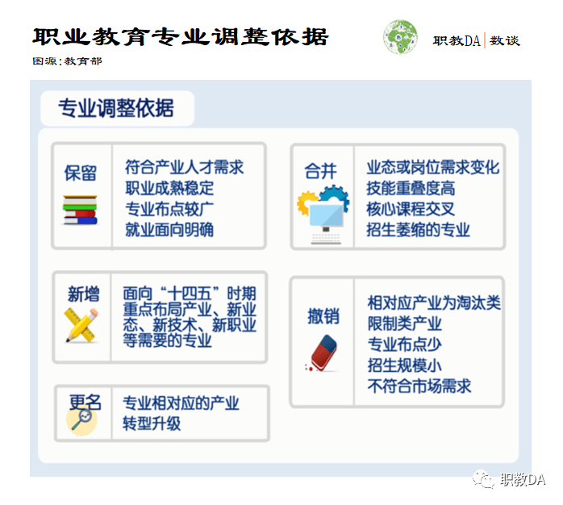
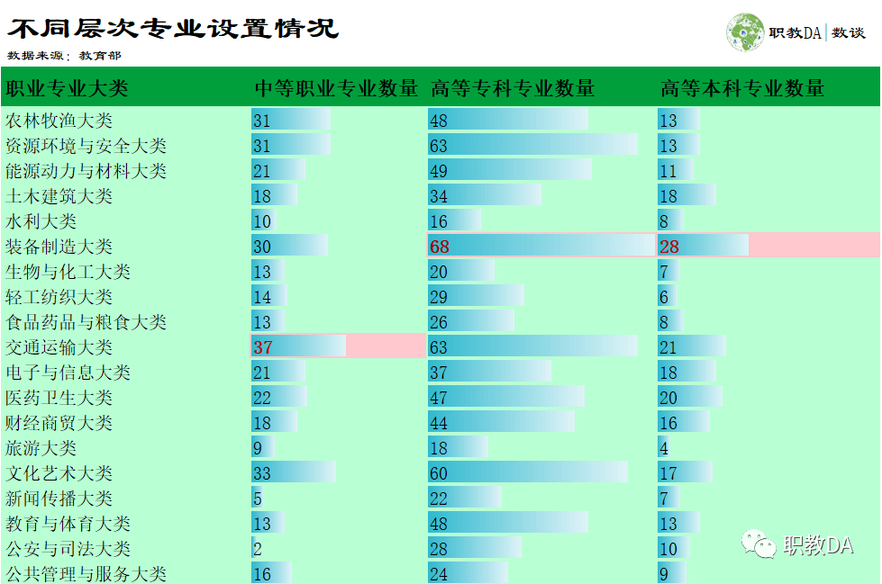
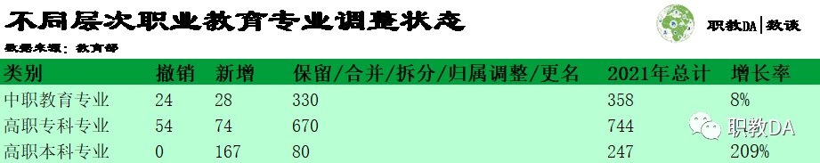
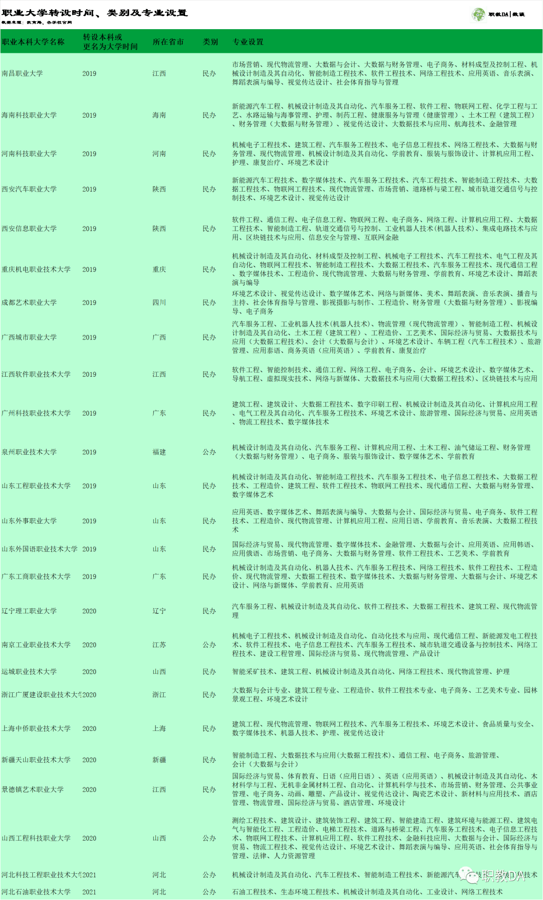
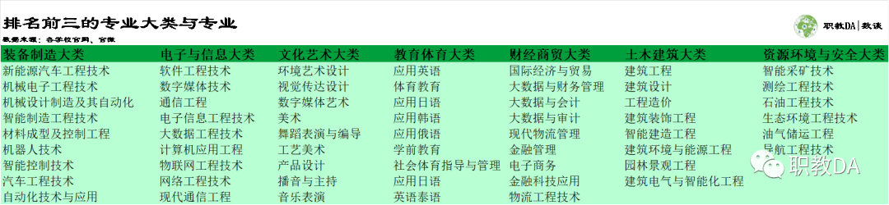

按照“十四五”国家经济社会发展和2035年远景目标对职业教育的要求，教育部在科学分析产业、职业、岗位、专业关系基础上，对接现代产业体系，服务产业基础高级化、产业链现代化，统一采用专业大类、专业类、专业三级分类，一体化设计中等职业教育、高等职业教育专科、高等职业教育本科不同层次专业，共设置19个专业大类、97个专业类、1349个专业，其中中职专业358个、高职专科专业744个、高职本科专业247个。
2021年职业教育专业调整依据
教育部凝聚高端智库、两院院士、知名专家智慧，历时10个月研制出2021年新职业教育目录。该目录是职业教育基础性教学指导文件、国家教学标准体系、及职业院校专业设置、招生、统计及用人单位选用毕业生的基本依据。本次专业各项调整均有不同的依据，核心依据实际上是要对接现代产业体系，面向市场及国家“十四五”产业布局对人才的需求，提升人才供给质量，以破解“卡脖子”关键技术，实现服务制造强国、质量强国、网络强国、数字中国。

不同层次职业学校均开设19个专业大类
2021年，中等职业教育、高等专科职业教育及高等本科职业教育专业大类类目一致，均开设19个专业大类。专业设置数量较多的专业大类包括：装备制造大类、交通运输大类、文化艺术大类及资源环境与安全大类。其中，中等职业教育设置专业数量排名前三的专业大类是交通运输大类、文化艺术大类、农林牧渔大类及资源环境与安全大类（并列第三）；高等专科职业教育设置专业数量排名前三的专业大类是装备制造大类、交通运输大类及资源环境与安全大类（并列第二）、文化艺术大类；高等本科职业教育设置专业数量排名前三的专业大类分别是装备制造大类、交通运输大类及医药卫生大类。

本科职大专业数量较去年度增长了2倍多
今年，高等本科职业教育新增167个专业，无撤销专业，较上一年同比增长2倍多。高职专科职业教育与中职教育专业分别撤销了54个及24个专业，新增分别占上一年保留下来专业数量的8%与11%。注：表中增长率指新增与上一年度保留（包括保留、合并、拆分、归属调整、更名）专业数量的比例。

本科职大第一批试点学校的设立时间较短。2019年，教育部正式批准了首批本科职业教育试点高校更名结果，它们由“职业学院”正式更名为“职业大学”，同时转设为本科院校。2020年、2021年分别有8所及2所职业学院成为职业本科大学（数据截至2021.6.25）。学校类别来看，以民办类型为主，共有20所学校，公办仅5所。25所学校分布在17个省份，其中山东、江西最多，各3所学校，广东省、河北省、陕西省及山西省各2所，福建省、广西、海南省、河南省、江苏省、辽宁省、上海市、四川省、新疆、浙江省及重庆市各1所。

从专业设置来看，各职业高校将培养具有“工匠精神”的应用型技能人才作为人才培养目标，为学生从传统的升学导向，向就业导向转变，从学科本位向职业能力本位转变提供重要途径。经统计，25所职业大学共开设91个专业。从专业大类来看，装备制造大类、电子与信息大类、文化艺术大类、教育体育大类与财经商贸大类并列第一，开设9个专业，其次是土木建筑大类，开设8个专业，资源环境与安全大类开设6个专业。

细究到专业大类的本质，可以看到，目前职业学校人才技能培养方向以制造业、电子信息，资源开发等关键技术型人才为主，以顺应我国智造业的快速发展趋势，解决技术性人才缺口，为国家现代化建设提供大规模人才技术支撑。诚然，25所职业大学远远不够解决大规模的人才缺口，但意义深远。它们的设立是国家对职业大学的重视及改变社会大众偏见的实际行动。